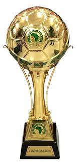
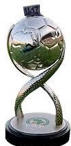
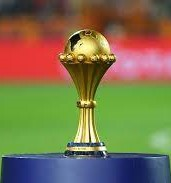
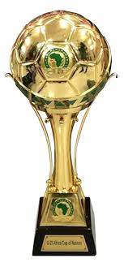
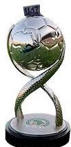
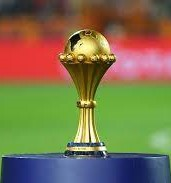

NIGERIA FOOTBALL FEDERATION
Super Eagles
Intercontinental
FIFA World Cup
FIFA Confederations Cup
Fourth-place: 1995
Afro-Asian Cup of Nations
Winners: 1995
Continental
Africa Cup of Nations
Winners: 1980, 1994, 2013
Runners-up: 1984, 1988, 1990, 2000
Third-place: 1976, 1978, 1992, 2002, 2004, 2006, 2010, 2019
African Nations Championship
Runners-up: 2018
Third-place: 2014
Football at the African Games
Gold medalists: 1973
Silver medalist: 1978
Olympics Eagles
Intercontinental
Football at the Summer Olympics
Gold Medal: 1996
Silver Medal: 2008
Bronze Medal: 2016
Continental
U-23 Africa Cup of Nations
Winners: 2015
Football at the African Games
Silver Medal: 2003
Bronze Medal: 1991, 1995, 2015,
Other
Inter Continental Cup
Winners: 2008
Niger Tournament[1]
Winners: 2002
TIFOCO Tournament[2]
Third-place: 2003
Flying Eagles Eagles
Intercontinental
FIFA U-20 World Cup
Runners-up: 1989, 2005
Third-place: 1985
Continental
Africa U-20 Cup of Nations
Winners: 1980, 1985, 1987, 1989, 2005, 2011, 2015
Runners-up: 1999, 2007
Third-place: 1979, 1981, 1995, 2009, 2013, 2023
Football at the African Games
Silver medal: 2019
Sub-Continental
WAFU U-20
Silver: 2018
Quarterfinals: 2008
Golden Eaglets
FIFA U-17 World Cup
Winners: 1985, 1993, 2007, 2013, 2015
Runners-up: 1987, 2001, 2009
Continental
Africa U-17 Cup of Nations
Winners: 2001, 2007
Runners-up: 1995, 2013
Third-place: 2003
Others
UEFA–CAF Meridian Cup
Winners: 1997
 





Super Falcons
Intercontinental
FIFA Women's World Cup
Continental
Africa Women Cup of Nations
Champions: 1991, 1995, 1998, 2000, 2002, 2004, 2006, 2010, 2014, 2016, 2018
Third-place: 2008
African Games
Gold Medal: 2003, 2007
Fourth-place: 2015
Regional
WAFU Zone B Women's Cup
Bronze: 2018
Winners: 2019
Other tournaments
2019 Four Nations Tournament (women's football)
Third-place
2021 Turkish Women's Cup
Champions
2023 Women's Revelations Cup
Third-place
Awards
African Women's National Team of the Year
Winners: (2010, 2014, 2016, 2018)
Olympics Falcons
Falconets
Intercontinental
• U-20 Women's World Cup
o Runners-up: 2010, 2014
o Fourth place: 2012
Continental
• African U-20 Women's World Cup qualification
o Winners: 2002, 2004
o Qualified for World Cup: 2006, 2008, 2010, 2012, 2014, 2015, 2018, 2022
• Football at the African Games
o Gold medalists: 2019
Flamingoes
Intercontinental
FIFA U-17 Women's World Cup
Third place: (2022)
Continental
African U-17 Cup of Nations for Women
Winners: 2008, 2010, 2012, 2013 & 2016